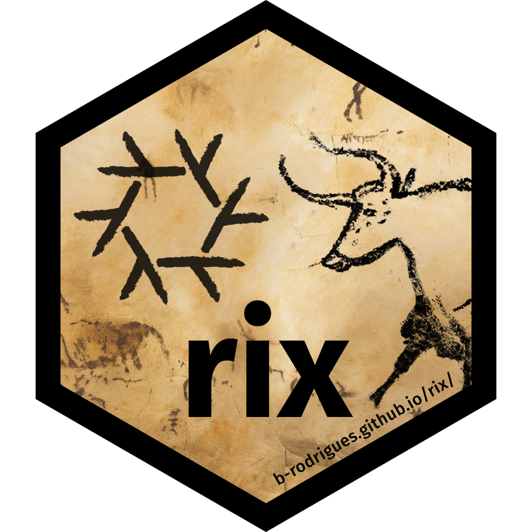

Introduction
{rix} is an R package that provides functions to help you write Nix expressions: these expressions can then be used by the Nix package manager to build completely reproducible development environments. These environments can be used for interactive data analysis or running pipelines in a CI/CD environment. Environments built with Nix contain R and all the required packages that you need for your project: there are currently more than 80.000 pieces of software available through the Nix package manager, including the entirety of CRAN and Bioconductor packages. The Nix package manager is extremely powerful: not only it handles all the dependencies of any package extremely well, it is also possible with it to reproduce environments containing old releases of software. It is thus possible to build environments that contain R version 4.0.0 (for example) to run an old project originally developed on that version of R.
With Nix, it is essentially possible to replace renv and Docker combined. If you need other tools or languages like Python or Julia, this can also be done easily. Nix is available for Linux, macOS and Windows (via WSL2).
Returning users
If you are not familiar with Nix or {rix} skip to the next section.
If you are already familiar with Nix and R, and simply want to get started as quickly as possible, you can start by installing Nix using the installer from Determinate Systems a company that provides services and tools built on Nix:
curl --proto '=https' --tlsv1.2 -sSf \
-L https://install.determinate.systems/nix | \
sh -s -- installIf you have R installed, you can start straight away from your R session by first installing {rix}:
install.packages("rix", repos = c("https://b-rodrigues.r-universe.dev",
"https://cloud.r-project.org"))
library("rix")You can try that everything works well by trying to built the Nix expression that ships with {rix}. Nix expressions are typically saved into files with the name default.nix. This expression installs the latest version of R and {rix} in a separate, reproducible environment:
file.copy(
# default.nix is the file containing the Nix expression
from = system.file("extdata", "default.nix", package = "rix"),
to = ".", overwrite = TRUE
)
# nix_build() is a wrapper around the command line tool `nix-build`
nix_build(project_path = ".")If everything worked well, you should see a file called result next to default.nix. You can now enter this newly built development environment by starting opening a terminal in that folder and typing nix-shell. You should be immediately dropped into an interactive R session.
If you don’t have R installed, but have the Nix package manager installed, you can run a temporary R session with R using this command (it will build the same environment as the one above):
nix-shell --expr "$(curl -sl https://raw.githubusercontent.com/b-rodrigues/rix/master/inst/extdata/default.nix)"You can then create new development environment definitions, build them, and start using them.
The Nix package manager
Nix is a package manager that can be installed on your computer (regardless of OS) and can be used to install software like with any other package manager. If you’re familiar with the Ubuntu Linux distribution, you likely have used apt-get to install software. On macOS, you may have used homebrew for similar purposes. Nix functions in a similar way, but has many advantages over classic package managers. The main advantage of Nix, at least for our purposes, is that its repository of software is huge. As of writing, it contains more than 80.000 packages, and the entirety of CRAN and Bioconductor is available through Nix’s repositories. This means that using Nix, it is possible to install not only R, but also all the packages required for your project. The obvious question is why use Nix instead of simply installing R and R packages as usual. The answer is that Nix makes sure to install every dependency of any package, up to required system libraries. For example, the xlsx package requires the Java programming language to be installed on your computer to successfully install. This can be difficult to achieve, and xlsx bullied many R developers throughout the years (especially those using a Linux distribution, sudo R CMD javareconf still plagues my nightmares). But with Nix, it suffices to declare that we want the xlsx package for our project, and Nix figures out automatically that Java is required and installs and configures it. It all just happens without any required intervention from the user. The second advantage of Nix is that it is possible to pin a certain revision of the Nix packages’ repository (called nixpkgs) for our project. Pinning a revision ensures that every package that Nix installs will always be at exactly the same versions, regardless of when in the future the packages get installed.
Rix workflow
The idea of {rix} is for you to declare the environment you need, using the provided rix() function, which in turn writes the required expression in a file for Nix to actually build that environment. You can then use this environment to either work interactively, or run R scripts. It is possible to have as many environments as projects. Each environment is isolated (or not, it’s up to you).
The main function of {rix} is called rix(). rix() has several arguments:
- the R version you need for your project
- a list of R packages that your project needs
- an optional list of additional software (for example, a Python interpreter, or Quarto)
- an optional list with packages to install from Github
- an optional list of LaTeX packages
- whether you want to use RStudio as an IDE for your project (or VS Code, or another environment)
- a path to save a file called
default.nix.
For example:
The call above writes a default.nix file in the current working directory. This default.nix can in turn be used by Nix to build an environment containing RStudio, the latest version of R, and the latest versions of the dplyr and {chronicler} packages. It should be noted that as of September 2023, RStudio is not available for macOS through Nix so the expression generated by the call above will not build successfully. It is also not possible to use RStudio installed by other means with a Nix environment. This is because RStudio changes some default environment variables and a globally installed RStudio (the one you install normally) would not recognize the R installed in the Nix environment. This is not the case for other IDEs such as VS code or Emacs. Another example:
This call will generate a default.nix that installs R version 4.2.2, with the dplyr and {chronicler} packages. Because the user wishes to use VS Code, the ide argument was set to “code”. This installs the required languageserver package as well, but unlike ide = "rstudio" does not install VS Code in that environment. Users should instead use the globally installed VS Code by starting it from that environment.
It’s also possible to install specific versions of packages:
but usually it is better to build an environment using the version of R that was current at the time of the release of dplyr version 1.0.0, instead of using the current version of R and install an old package. It is also possible to specify software to install alongside R and R packages with rix(), read the Building reproducible development environments with rix vignette for more details.
For more details on how to use a Nix environment using an IDE interactively, read the Interactive use vignette.
default.nix
The Nix package manager can be used to build reproducible development environments according to the specifications found in a file called default.nix, which contains an expression, in Nix jargon. To make it easier for R programmers to use Nix, {rix} can be used to write this file for you. {rix} does not require Nix to be installed, so you could generate expressions and use them on other machines. To actually build an environment using a default.nix, file, go to where you chose to write it (ideally in a new, empty folder that will be the root folder of your project) and use the Nix package manager to build the environment. Call the following function in a terminal:
nix-build{rix} also has a nix_build() helper function, so you can build environments from an active R session if needed.
Once Nix is done building the environment, you can start working on it interactively by using the following command in a terminal emulator (not the R console):
nix-shellYou will drop into a Nix shell. You can now call the IDE of your choice. For RStudio, simply call:
rstudioThis will start RStudio. RStudio will use the version of R and library of packages from that environment.
Running programs from an environment
You could create a bash script that you put in the path to make this process more streamlined. For example, if your project is called housing, you could create this script and execute it to start your project:
!#/bin/bash
nix-shell /absolute/path/to/housing/default.nix --run rstudioThis will execute RStudio in the environment for the housing project. If you use targets you could execute the pipeline in the environment by running:
cd /absolute/path/to/housing/ && nix-shell default.nix --run "Rscript -e 'targets::tar_make()'"It’s possible to execute the pipeline automatically using a so-called “shell hook”. See the Reproducible analytical pipelines with Nix vignette for more details.
Installation
You can install the development version of rix from GitHub with:
# install.packages("remotes")
remotes::install_github("b-rodrigues/rix")Or you can install it from the {rix} r-universe, which serves you from a CRAN-like R package repository:
install.packages("rix", repos = c("https://b-rodrigues.r-universe.dev",
"https://cloud.r-project.org"))As stated above, {rix} does not require Nix to be installed to generate default.nix files. But if you are on a machine on which R is not already installed, and you want to start using {rix} to generate default.nix files, you could first start by installing Nix, and then use the following command to drop into a temporary Nix shell that comes with R and {rix} pre-installed:
nix-shell --expr "$(curl -sl https://raw.githubusercontent.com/b-rodrigues/rix/master/inst/extdata/default.nix)"This should immediately start an R session inside your terminal. You can now run something like this:
rix(r_ver = "latest",
r_pkgs = c("dplyr", "ggplot2"),
system_pkgs = NULL,
git_pkgs = NULL,
ide = "rstudio",
project_path = ".",
overwrite = TRUE)to generate a default.nix, and then use that file to generate an environment with R, Rstudio, dplyr and ggplot2. If you need to add packages for your project, rerun the command above, but add the needed packages to r_pkgs.
Installing Nix
Windows pre-requisites
If you are on Windows, you need the Windows Subsystem for Linux 2 (WSL2) to run Nix. If you are on a recent version of Windows 10 or 11, you can simply run this as an administrator in PowerShell:
wsl --installYou can find further installation notes at this official MS documentation.
We recommend to activate systemd in Ubuntu WSL2, mainly because this supports other users than root running Nix. To set this up, please do as outlined this official Ubuntu blog entry:
# in WSL2 Ubuntu shell
sudo -i
nano /etc/wsl.conf
# add this entry
[boot]
systemd=true
# then restart running instance from PowerShell
wsl --shutdown
# relaunch Ubuntu WSL2Afterwards, you can install Nix like business as usual. You can proceed with the Determinant Systems installer. If you cannot or have decided not to activate systemd, then you have to append --init none to the command. More details about this you can find at The Determinante Nix Installer.
Installing Nix using the Determinate Systems installer
To make installation and de-installation of Nix simple, we recommend the Determinate Systems installer which you can find here. This installer works for any system and make uninstalling Nix very easy as well.
Docker
You can also try out Nix inside Docker. To do so, you can start your image from the NixOS Docker image. NixOS is a full GNU/Linux distribution that uses Nix as its system package manager.
Contributing
This package is developed using the fusen package. If you want to contribute, please edit the .Rmd files found in the dev/ folder. Then, inflate the package using fusen::inflate_all(). If no errors are found (warning and notes are ok), then commit and open a PR. To learn how to use fusen (don’t worry, it’s super easy), refer to this vignette. In our development workflow, we use semantic versioning via {fledge}.
Recommended reading
- Nix for R series from Bruno’s blog. Or, in case you like video tutorials, watch this one on Reproducible R development environments with Nix
- nix.dev tutorials
- INRIA’s Nix tutorial
- Nix pills
- Nix for Data Science
- NixOS explained: NixOS is an entire Linux distribution that uses Nix as its package manager.
- Blog post: Nix with R and devtools
- Blog post: Statistical Rethinking and Nix
- Blog post: Searching and installing old versions of Nix packages